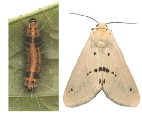

TUBER VEGETABLES :: MAJOR PESTS :: BIHAR HAIRY CATERPILLAR
- Bihar hairy caterpillar: Spilosoma obliqua (Arctiidae: Coleoptera)
It attacks a wide range of cultivated crops including potato. Among vegetables, preferred host of S. obliqua is sweet potato.
For distribution and status, host range, bionmics, damage symptoms and management refer sunflower or mustard
|  |
Spilosoma obliqua |